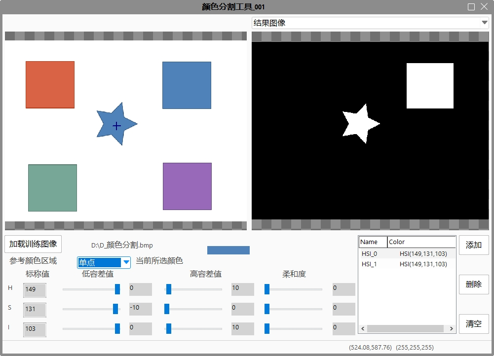

颜色分割工具的主要功能是在颜色图像中分割出设定的一到多个期望颜色表中颜色，并输出灰度图像，白色为目标颜色，黑色为背景。颜色分割工具支持RGB和HIS两种颜色空间，HSI色彩空间比RGB色彩空间更符合人的视觉特性，所以采用HSI颜色空间可能会得到比较好的结果。

| 分类 | 参数名称 | 参数描述 |
|---|---|---|
| 属性窗口 | ROI区域类型 | 有两种选项：无和仿射矩形ROI。 |
| 仿射矩形ROI | 用于设置待分割源图像的分割区域。主要有中心坐标，长宽，旋转角度和切变角度。 | |
| 开启并行运算 | 是否开启并行运算，选择是时，算法将开启OpenMp并行计算方式，可以提升计算速度，但可能出现耗时不稳定的情况，选择否时，算法将关闭OpenMp并行计算。 | |
| 线程数百分比 | 设置并行运算的线程数百分比，有效范围为 (0, 0.75]，对应表示(0%, 75%]百分比范围。 | |
| 图像窗口 | 输入图像 | 待分割的图像。 |
| 仿射矩形ROI | 用于设置待分割图像的矩形区域。 | |
| 数据链 | 输入图像 | 待分割的图像。 |
| 二维线性变换 | 可选，是否对分割的目的图像进行图像变换（旋转，平移，缩放等）。 | |
| 高级界面 | 标称 | 使用十字坐标从源图像提取HIS颜色空间的颜色。 |
| 颜色容差 | 见详细说明。 | |
| 柔和度 | 见详细说明。 | |
| 添加 | 添加一项HIS颜色空间的颜色。 | |
| 删除 | 删除一项HIS颜色空间的颜色。 | |
| 清空 | 清空获取的HIS颜色空间的颜色。 | |
| 仿射矩形GUI | 属性“仿射矩形ROI”选择仿射矩形ROI时，会显示仿射矩形GUI。 |
| 分类 | 参数名称 | 参数描述 |
|---|---|---|
| 监视窗口 | 输出图像 | 分割后的目的图像。 |
| 执行结果 | 工具执行结果。 | |
| 执行时间 | 工具执行时间。 | |
| 图像窗口 | 输出图像 | 分割后的目的图像。 |
| 执行结果 | 显示工具执行结果，执行成功显示“OK”，执行失败显示“NG”，同监视窗口的执行结果参数。 | |
| 数据链 | 输出图像 | 分割后的目的图像。 |
颜色空间：颜色分割适用于RGB颜色空间和HSI颜色空间。这两种颜色空间都是用三个平面值表示一种颜色。如图3所示。
颜色范围是颜色分割的目标颜色。我们可能会对一种颜色范围感兴趣，同时，我们也可能会对多种颜色范围感兴趣。如：我们不仅对红色的部分感兴趣，对蓝色的颜色部分也感兴趣。因此，我们可以把红色和蓝色作为目标颜色范围。对于多种目标颜色范围分割，则合并每种颜色范围的分割结果。
对于给定的单点颜色值（H，S，I），我们称给定的颜色值为标称值NominalValuei，i = 1, 2, 3分别标记相应的平面H, S, I（如图3中NominalValueH=249）。而对于给定的一块区域，则计算该区域的颜色的平均值为标称值。
颜色分割时，要从彩色图像过滤出在给定颜色的相似颜色部分，先要对相似颜色进行定义。一般采用低容差值LowTolValue和高容差值HighTolValue来描述。低容差值用于衡量相对于标称值向下的选取范围，而高容差值用于衡量相对于标称值向上的选取范围。低容差值为负数。
容差值ToleranceValue用来表示相对于标称值NominalValue的整个选取范围。当颜色值在相似颜色选取范围[LowLimitValue, HighLimitValue]内的值则为我们感兴趣部分。
通常情况下，我们颜色分割后结果为一幅二值图像，一种灰度值（255）表示感兴趣颜色部分，另一种灰度值（0）表示不感兴趣颜色部分。但是，有时候我们不仅只是希望结果如此，而是想要用多种灰度值分别描述了结果图像的层次关系。柔和度Softness就是用来描述结果图像中颜色层次关系。
参见“\Samples\颜色分割工具.gvp”。